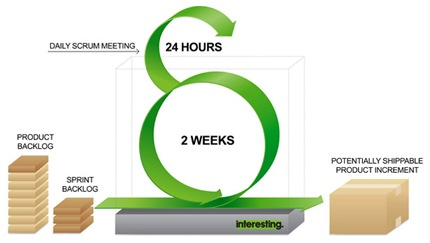
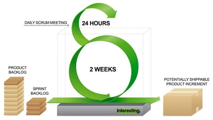

Travail de Fin d'Etudes

Etude et développement des applications RTLNet
Plan
- Présentation de RTLNet
- Organisation du travail
- Projets
- Concours de pronostics pronostics.rtl.fr
- Application mobile Snappy
- Gestionnaire de contenus Revo
- Fondée en 2000
- 30 salariés
Plus de 20 projets

Méthode Scrum


Processus

Jira
Processus
Jenkins
Processus
Run Deck
Processus
Monitoring
function increase(n) {
result = n + 1;
return result;
}
function decrease() {
result -= 1;
return result;
}
Processus
Contexte
- Concours de pronostics hippiques
- Reprise de la ligue 1
Prototype
- Concours de pronostics hippiques
- Reprise de la ligue 1